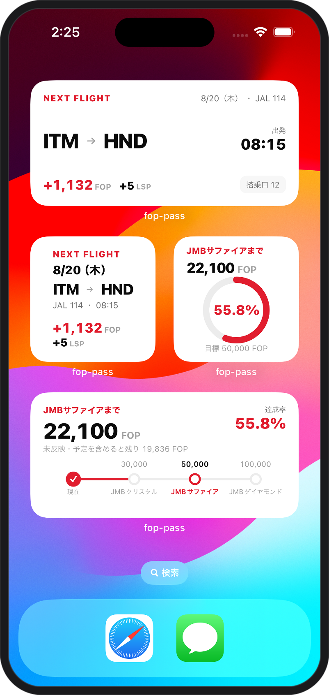

FOPとLSPを、ひとつの画面に
JAL公式で確認した「確定」の数字、搭乗済みでまだ反映されていない「未反映」、これから乗る「予定」。3つを分けて持つので、公式値と予測が混ざりません。年末時点での着地見込みも同じ画面で確認できます。
- 確定
- JAL公式で確認済みの数字。取り込んだ記録と紐づけて二重加算を防ぎます
- 未反映
- 搭乗済みだが公式へ未反映の便。着地予測にのみ加算します
- 予定
- これから搭乗する便。予約済みの便を入れて見込みを立てられます

FLIGHT STATUS PLANNER
FOP Passは、FLY ONポイント・Life Statusポイント・搭乗予定・修行プランをまとめて管理するiPhoneアプリです。JMBサファイアやJGCまで残り何FOPかを、確定分と予定分に分けて確認できます。
修行中に何度も電卓をたたいていた計算を、アプリが引き受けます。無料で使える機能と、Proで使える機能は次のとおりです。
| 機能 | 内容 | 無料 | Pro |
|---|---|---|---|
| ステータス進捗 | 目標まで残り何FOPかと達成率。確定・未反映・予定を分けて管理 | ● | ● |
| FOP・マイル自動計算 | 区間マイル×積算率＋搭乗ボーナス。国内線・国際線に対応 | ● | ● |
| あと何回 | この路線をあと何往復すれば届くかを即座に試算 | ● | ● |
| 搭乗履歴の管理 | 搭乗日順の一覧。確定・未反映・予定の3状態で管理 | ● | ● |
| 修行プラン | 条件から達成ルートを提案。最短・最安・少ない回数・FOP単価で比較 | — | ● |
| LSPシミュレーション | 次のStarグレードまでに必要な金額・マイル数 | — | ● |
| 搭乗履歴の分析 | 年ごとのFOP推移、FOP単価、搭乗回数、路線別の実績 | — | ● |
| ホーム画面ウィジェット | FOP・LSP・ステータス進捗・次のフライトの4種類 | — | ● |
JAL公式で確認した「確定」の数字、搭乗済みでまだ反映されていない「未反映」、これから乗る「予定」。3つを分けて持つので、公式値と予測が混ざりません。年末時点での着地見込みも同じ画面で確認できます。

登録した便は搭乗日が近い順に並びます。確定・未反映・予定で絞り込めるので、いま何が反映待ちなのかが分かります。空港と運賃種別、搭乗クラスを選ぶだけで、FOP・LSP・マイルは自動で試算されます。
区間マイルはJAL公式の区間マイル表から取り込んでいます。但馬・隠岐・多良間といった地方路線から国際線まで収録しており、区間マイルや積算率が判別できない条件では、推測せず「自動計算できません」とお伝えします。
PRO
出発地、旅程、予算、1日の便数、期限。条件を決めると、目標に届くルートの候補を並べます。最短・最安・少ない回数・FOP単価の4つの方針で並べ替えて、自分に合う飛び方を選べます。選んだプランは予定便としてそのまま登録できます。


PRO
生涯累積のLife Statusポイントと、次のStarグレードまでの距離。ショッピングで到達する場合に必要な金額とマイル数を、JALカードの還元率ごとに切り替えて確認できます。金額表示とマイル表示を切り替えられます。
WIDGET ／ PRO
FOP、LSP、ステータス進捗、次のフライト。4種類のウィジェットをホーム画面に置けば、開かずに今の状況が分かります。次のフライトなら、出発時刻と搭乗口、その便で得られるFOPとLSPまで。
ウィジェットはPro機能です。小・中・大のサイズに対応しています。

本体は無料です。記録と進捗の管理は、無料のままずっとお使いいただけます。Proは「どう飛べば届くか」を考えるための機能をまとめて開放します。
無料版
¥0 ずっと無料
記録と進捗の管理に必要な機能は、すべて無料で使えます。
アカウント登録もログインも不要です。データは端末内にのみ保存されます。
FOP Pass Pro
買い切り¥680 一度きり／自動更新なし
「どう飛べば届くか」を考える機能をまとめて開放します。
同じApple Accountであれば「購入を復元」からいつでも引き継げます。広告は表示しません。
FOP Passが扱う2つのポイントの違いです。数値の考え方が分かると、アプリの画面も読みやすくなります。
1月から12月までの1年間で積算する、その年のステータスを決めるポイントです。区間マイルに運賃ごとの積算率を掛け、搭乗ボーナスを足して計算します。翌年には持ち越されず、毎年ゼロから積み直します。
ポイント以外の条件もあります。達成の可否はJAL公式でご確認ください。
年ごとにリセットされず、生涯にわたって積み上がるポイントです。搭乗だけでなく、JALカードのショッピングやJAL Payの利用でも積算されます。到達したStarグレードは維持されます。
積算基準はJAL公式の記載に基づきます（2026年8月時点）。
ダウンロードは無料です。FOP・LSPの進捗管理、FOPの自動計算、あと何回の試算、搭乗履歴の管理は無料のままお使いいただけます。修行プラン、LSPシミュレーション、分析、ホーム画面ウィジェットは買い切り680円のProでご利用いただけます。
いいえ。FOP Passは日本航空株式会社とは関係のない、個人開発の非公式アプリです。JALのロゴやブランド画像は使用しておらず、JALのアカウントへログインする機能もありません。
必要ありません。アカウント登録もログインも不要です。FOPやLSPの数値はご自身で入力していただく方式で、搭乗履歴を含むすべてのデータは端末内にのみ保存されます。
アプリ内に収録したルールに基づく試算値です。区間マイルはJAL公式の区間マイル表から取り込んでいますが、実際の積算結果とは異なる場合があります。最終的な確認はJAL公式でお願いします。区間マイルや積算率が判別できない条件では、推測せず自動計算できない旨を表示します。
対応しています。国内線270区間、国際線138区間の区間マイルを収録しており、FLY ONポイント換算率の区分も到着地から自動で判定します。
同じApple Accountであれば、アプリ内の「購入を復元」から引き継げます。ただし搭乗履歴などのデータは端末内にのみ保存されるため、引き継ぎには書き出し機能をご利用ください。
解決しない場合はお問い合わせからご連絡ください。